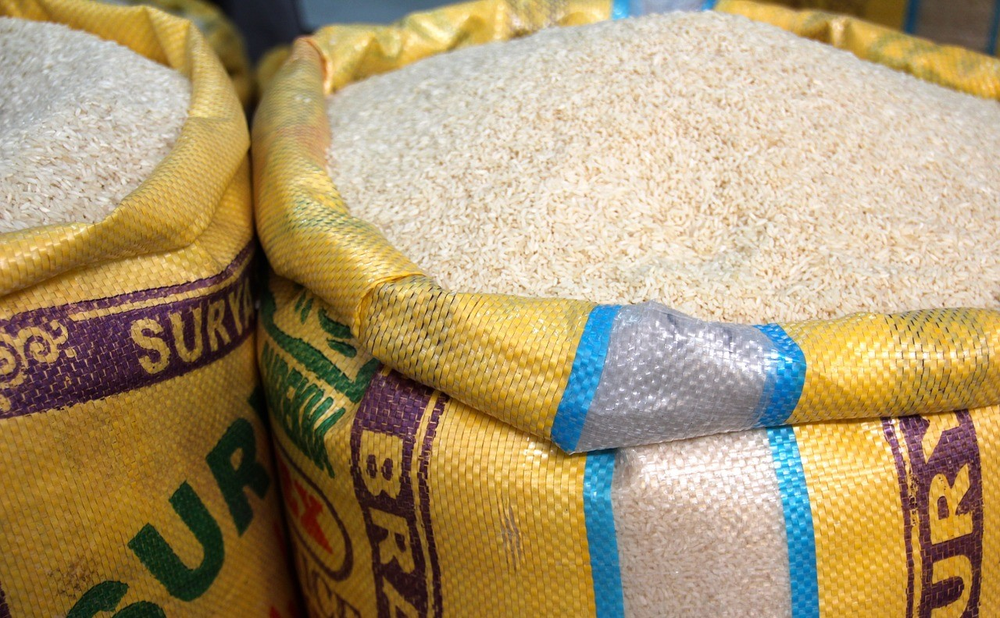

Frequently Asked Questions

What is AARQ?
The Association for the Administration of Rice Quotas, Inc. (AARQ) is a not-for-profit corporation formed to administer the tariff-rate quotas (TRQs) for milled and brown rice granted by the European Union (EU) to the United States under the U.S. – EU Enlargement Agreement signed July 22, 1996. The company operates as an Export Trading Company (ETC) and has received an Export Trade Certificate of Review from the U.S. Department of Commerce covering its activities in administering the quota. AARQ uses an independent administrator to run its TRQ auctions.
How much is the quota?
The annual quota volume has been stable at 38,721 metric tons. Rice within the quota will enter the EU duty free. The quota is assigned through an open-tender auction process.
How does the auction operate?
A schedule of AARQ auctions is behind the “Auctions” tab on the AARQ website. On the day of AARQ auctions, AARQ's independent administrator accepts bids which specify the amount of quota rights and the price per metric ton that bidders would like to bid on. The quota is awarded to bidders offering the highest price per metric ton until the full amount of quota available in the auction has been allocated. Detailed auction instructions and eligibility requirements for participation are available behind the “Auctions” tab on the AARQ website.
What is an Export Trading Company (ETC)?
An Export Trading Company is ". . . a person, partnership, association or similar organization, organized and operating principally for the purpose of (A) exporting goods produced in the United States; or (B) facilitating the exports of goods produced in the United States by providing one or more export trade services." » [15 U.S.C § 4002(a)(4)].
How ‘fair’ is the system for companies not on the Board?
The system ensures fairness to all persons and provides no special benefits to companies who have a representative on the AARQ Board. The Certificate of Review issued by the Department of Commerce that entitles AARQ to operate under the Export Trading Company Act specifically stipulates that members of the Board of Directors may not be involved in determining the results of any auction or in issuing export certificates. Only the AARQ Administrator, its independent auditors and legal counsel can be involved in those determinations. The duties of the Board of Directors are to hire an Administrator, to provide general guidance about trade in rice that aids the Administrator in developing the auction system, and to ensure that the proceeds of the auction are disbursed in accordance with the terms of the ETC certificate of review. In addition, AARQ is required to provide annual reports about its operations to the Department of Commerce and is subject to its oversight.
What happens after the auction?
Successful bidders in an AARQ auction may use their quota rights to import rice into the EU duty-free. The AARQ Administrator will issue tariff-rate quota (TRQ) certificates designating the quantity and form of rice covered.
Under EU regulations, the AARQ TRQ Certificates can be used to enter U.S. rice into the EU under TRQs only in tandem with import licenses issued to EU importers by the EU. For 2018, the EU will issue import licenses for designated quantities in TRQ Tranches opening in January, April and July (and September if EU import licenses were not issued for the total quantities designated for January, April and July). TRQ quantities not covered by import licenses issued for one Tranche (e.g., July) are carried over to the following Tranche (e.g., September).
Within the first ten business days of the month in which a TRQ Tranche opens, EU importers must apply to Member State authorities for licenses to import a specified quantity and form of U.S.-origin TRQ rice. They must submit a TRQ Certificate for that quantity with the import license application. U.S. holders of TRQ Certificates therefore must transmit the TRQ Certificates to EU importers to permit the importers to comply with that timetable. The EU import licenses are valid from their date of issue through the last day of the third month thereafter.
What happens if a winning bidder can't use the total amount of the quota that it obtains in the auction?
TRQ certificates are fully transferable. If a party cannot use the certificates it obtained in the auction, it can sell or transfer them to another exporter.
When will the awarded quota expire?
Certificates issued in the auctions will be valid for entry into the EU through December 31 of the year in which they were issued.
TRQ certificates issued in an Open Tender Process that are not presented with an import license application by an EU importer during the first ten business days of the tranche (i.e., January, April, or July) will remain valid for any subsequent tranche (i.e., April, July or September).
The holder (including a transferee) of a TRQ Certificate must transmit the certificate to an EU importer who will apply for an import license during the first ten business days of the tranche or any subsequent tranche in that year.
Does AARQ assist bidders in obtaining and shipping rice?
No. AARQ’s sole functions are to operate the open-tender auction and to allocate the auction proceeds. Successful bidders in AARQ auctions acquire rice and arrange for the export. AARQ has no role in the acquisition, sale or export of rice.
What are the auction proceeds used for?
Proceeds from the auction are used first to cover operating expenses including legal, accounting and administrative costs. Of the remaining proceeds at the end of each year of operations, 22 percent is distributed to The Rice Foundation for research, 39 percent is distributed to AARQ members documenting exports of U.S. paddy, brown or milled rice to the EU, and 39 percent is distributed to AARQ members documenting exports of U.S. paddy, brown or milled rice to Non-EU destinations.
© 2019 Association for the Administration of Rice Quotas, Inc.
2001 L St NW Ste 1000, Washington, DC 20036
Phone: 202-466-1150 | Fax: 202-785-3330 | aarq@economic-consulting.com